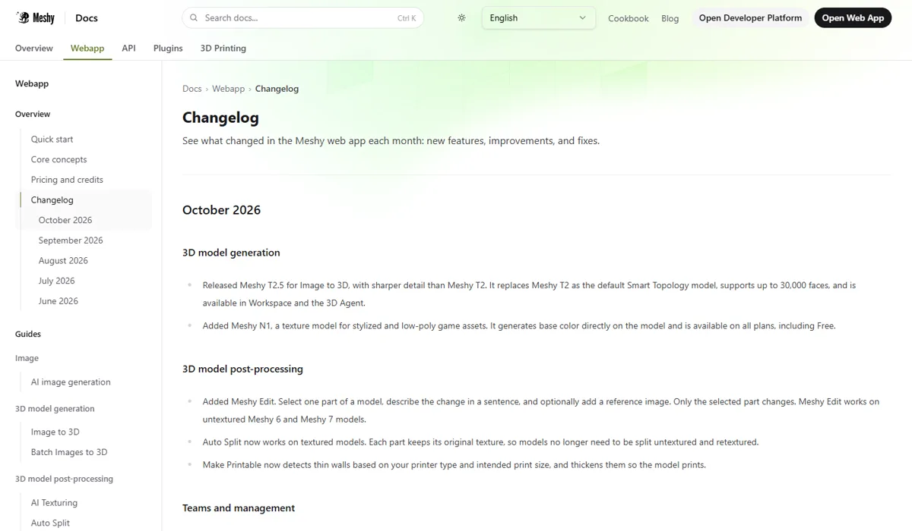

MeshyMeshy
Meshy 是 AI 3D 赛道单轮融资最大的公司：2026 年 7 月以 15 亿美元估值融资近 4 亿美元，注册用户超过 1,200 万。它的打法是“高频迭代 + 覆盖全流程”：四个月里接连推出 Meshy 7 / 7.1、智能拓扑 T2.5、局部编辑、3D 打印拆件和文字生成动作，免费版还允许署名后商用，是面向个人创作者最友好的 3D 工具之一。
一页结论
- 资本与规模：B 轮由 IDG 资本、经纬创投和 Monolith 共同领投，红杉中国、源码资本超额跟投；注册用户超过 1,200 万，总部在美国加州桑尼维尔S1S2
- 迭代速度最快：7 月加入智能拓扑，8 月 Meshy 7、文字生成动作，9 月 Meshy 7.1、3D 打印自动拆件，10 月 T2.5 智能拓扑（最多 3 万面）、局部编辑 Meshy EditS5S6
- 覆盖从生成到打印：生成、贴图（最高 8K）、重拓扑、绑骨、动画、动作生成、自动拆件和“可打印化”检测一应俱全S5S6
- 对个人最友好的授权：免费档每月 100 积分，生成结果按 CC BY 4.0 授权，署名即可商用；付费档为私有授权S4
- 独立数据仍停留在 2025 年：3D Arena 中 Meshy 排第 9、落后混元 3D-2；Meshy 7 的领先只来自自建基准，行业媒体指出尚无独立复现S3S7
01公司介绍
02公司战略
Meshy 的主线是“工具全、迭代快、门槛低”：用每月更新的功能覆盖 3D 生产和 3D 打印的每个环节，用宽松的免费授权吸引个人创作者，再向团队和企业转化。
03定位与竞争
一句话定位：为个人创作者、游戏与 3D 打印用户和中小团队，在 3D 资产与打印品制作中，提供功能最全、门槛最低的 AI 3D 工具与 API。
| 目标用户 | 主要入口 | 依据 |
|---|---|---|
| 个人创作者 | Meshy 网页版 | 免费档每月 100 积分、署名即可商用；注册用户超 1,200 万S2S4 |
| 3D 打印用户 | 网页版、Creative Lab | 自动拆件、可打印化检测、打印产品模板S5S6 |
| 游戏与动画团队 | Studio 档、API | 智能拓扑、绑骨、动作生成、团队共享积分S4S5 |
| 开发者与企业 | Meshy API、插件 | 按积分调用，失败任务退还积分S5 |
04产品与模型矩阵
| 类别 | 模型 / 产品 | 定位 | 状态（2026-11） |
|---|---|---|---|
| 3D 模型 | Meshy 7.1 | 图生 3D 与文生 3D，几何分辨率可选标准、2K、4K | 9 月发布，API 默认模型S5 |
| 3D 模型 | Meshy 7 | 以几何对齐为目标的图生 3D 模型 | 8 月 10 日正式可用S7 |
| 3D 模型 | Meshy 6 / 6 Lite | 上一代与低价版；Meshy 5 已于 10 月 10 日退役 | 可用S5 |
| 智能拓扑 | Meshy T2.5 | 低面数、干净拓扑的游戏资产，最多 3 万面 | 10 月成为默认智能拓扑模型S5S6 |
| 贴图 | Meshy 7 Texture、Meshy N1 | 写实 PBR 贴图；N1 面向风格化、低多边形资产，免费可用 | 可用S5S6 |
| 编辑 | Meshy Edit | 选中模型一部分，用一句话修改，只改选中部分 | 10 月上线S6 |
| 3D 打印 | Auto Split、Make Printable、Creative Lab | 自动拆件、薄壁检测加厚、钥匙扣 / 冰箱贴 / 手办等打印产品 | 可用S5S6 |
| 动画 | 绑骨、Text to Motion、动作库 | 文字生成动作（FBX / BVH），批量应用预设动作 | 8–9 月上线S5 |
- Meshy 7.1；3D 打印自动拆件2K / 4K 几何分辨率S5
用户入口
网页版 Workspace / 3D AgentMeshy API 与插件Creative Lab（打印产品）
生成
Meshy 7.1 / 7 / 6 LiteT2.5 智能拓扑贴图（7 Texture、N1，最高 8K）
后处理
Meshy Edit 局部修改重拓扑、绑骨文字生成动作、动作库
3D 打印
自动拆件（保留贴图）可打印化（薄壁检测）
授权免费：CC BY 4.0，署名可商用付费：私有授权

05生成能力与可控性
Meshy 的工具覆盖最全；质量方面，最新的独立数据仍停留在 2025 年，Meshy 7 的领先来自自建基准。
| 能力 | Meshy |
|---|---|
| 几何 | Meshy 7.1 几何分辨率可选标准、2K、4K（4K 仅付费档）S5 |
| 拓扑 | T2.5 智能拓扑生成低面数游戏资产，最多 3 万面S6 |
| 贴图 | 2K、4K 贴图 10 积分，8K 贴图 15 积分；N1 生成风格化底色S5S6 |
| 局部编辑 | Meshy Edit 只修改选中的部分（适用于未贴图的 Meshy 6、7 模型）S6 |
| 3D 打印 | 自动拆件（可保留贴图）、按打印机类型与尺寸检测并加厚薄壁S5S6 |
| 动画 | 自动绑骨、文字生成动作、预设动作库S5 |
| 厂商自测 | Meshy 7 在自建单视图对齐基准中整体比例 81.0%、空间分布 79.7%、表面细节 59.8%，领先另外 4 个模型（厂商称）S7 |
Meshy其他
CSM Cube（3D 高斯）
1405
TRELLIS-3DGS（微软）
1384
TRELLIS 网格（微软）
1306
Hunyuan3D-2（腾讯）
1298
Meshy
1243
Hi3DGen
1207
第三方评测怎么说
| 评测方 | 时间 | 对比对象 | 结论 |
|---|---|---|---|
| Hugging Face 3D Arena（Dylan Ebert 论文） | 数据截至 2025-05 | 19 个图生 3D 模型 | Meshy 第 9（Elo 1243），落后 TRELLIS、Hunyuan3D-2 等；论文指出投票者偏好视觉效果，贴图模型比无贴图模型平均高 144 分S3 |
| 3D Printing Industry（Aura Moreno） | 2026-08-14 | Meshy 7 发布 | 文章完全依赖 Meshy 自建基准，没有第三方测试或独立复现；指标和测试都由 Meshy 设计，需等其承诺的技术报告才能独立评估S7 |
尚未找到对 Meshy 7 的独立对比实测；3D 工具厂商自办的排行榜未采用。
评测共识：Meshy 的功能广度在 3D 工具中最突出；但生成质量缺少新的独立数据，2025 年的公开盲测中它落后于开源的 TRELLIS 和混元 3D。
06解决方案与场景
07商业模式与价格
订阅（个人到团队）+ API，按积分消耗；免费档用宽松授权吸引用户，下载生成结果需要 Pro 以上。
| 档位 | 月费 | 每月积分 | 授权 |
|---|---|---|---|
| Free | $0 | 100（约 10 个资产） | CC BY 4.0，署名即可商用 |
| Pro | $20 | 1,000（约 100 个资产） | 私有，归客户所有 |
| Premium | $40 | 3,000 | 私有 |
| Ultra | $100 | 8,000 | 私有 |
| Studio | $70（席位另计每月 $10） | 5,500，团队共享 | 私有 |
| Enterprise | 定制 | 定制 | 私有 |
Meshy 官方定价页，2026-11-05 访问；年付有 8 折。Meshy 7 生成的模型需 Pro 以上才能下载。来源：S4S7
Pro（$20 / 1,000 积分）
$20.0
Premium（$40 / 3,000 积分）
$13.3
Studio（$70 / 5,500 积分）
$12.7
Ultra（$100 / 8,000 积分）
$12.5
| API 任务 | 积分 |
|---|---|
| Meshy 6 Lite 网格 / 含贴图 | 5 / 15 |
| 重新贴图（2K、4K / 8K） | 10 / 15 |
| Meshy 7.1 2K、4K 几何 | 在基础价上加 5 |
| 自动拆件 | 10 |
| 文字生成动作（prime / swift） | 10 / 3 |
| 应用动作 | 每个 3 |
Meshy API 更新日志列出的积分价格；失败任务退还积分。来源：S5
| 任务 | 组合 | 估算成本 |
|---|---|---|
| 一个带贴图的模型 | Meshy 6 Lite 含贴图 15 积分 | 约 $0.30（按 Pro 档每积分 $0.02） |
| 一个可打印的拆件模型 | 生成 + 自动拆件 | 约 25 积分，约 $0.50 |
| 免费用户 | 每月 100 积分 | 约 10 个资产，署名可商用 |
08上下游与渠道
09用户、客户与收入
10用户口碑与容错设计
11版权与合规
- 授权分层：免费结果按 CC BY 4.0 授权（署名可商用），付费结果为私有、归客户所有S4
- 训练数据：未公开来源
- 诉讼：本次调研未发现针对 Meshy 的版权诉讼
12近期动态
13潜在风险分析意见
- 质量缺少独立背书：在公开盲测里落后开源模型，若新版本仍无独立数据，企业客户难以信服
- 功能多、模型更替快：API 用户需要频繁迁移，增加接入成本
- 开源与大厂压力：TRELLIS、混元 3D 等开源模型免费可用
- 收入与估值差距：估值 15 亿美元，收入规模未正式披露
- 免费授权的双刃剑：宽松授权拉新，但可能削弱付费转化
14综合结论分析意见
开源与社区落后未见开源模型
关键动作拆解（三问法）
| 动作 | 为什么做（推断） | 效果如何 | 要不要学 |
|---|---|---|---|
| 几乎每月发布新功能 | 用功能广度弥补单点质量的不确定性，留住用户 | 工具覆盖最全S6 | 借鉴但要控制 API 的迁移成本 |
| 深耕 3D 打印 | 3D 打印是 AI 3D 最直接的消费级变现场景 | 拆件、可打印化、打印产品形成闭环S5S6 | 高优借鉴找到最短的变现路径 |
| 免费结果可署名商用 | 降低尝试门槛，扩大用户与传播 | 注册用户超 1,200 万S2S4 | 借鉴授权条款本身就是增长工具 |
| 自建对齐基准 | 缺少公认的 3D 评测，用自己的标准证明进步 | 行业媒体指出未经独立复现S7 | 谨慎自建基准要公开方法并接受复现 |
优势
- 工作流最全、迭代最快
- 3D 打印闭环
- 授权友好
劣势
- 质量缺少独立背书
- 模型更替频繁
- 未开源
机会
- 消费级 3D 打印
- 游戏资产
- 角色动画
威胁
- 开源 3D 模型
- Tripo 等对手的大额融资
- 大厂进入
对本系列三个问题的回答
- 大厂会不会通吃？ 3D 赛道的头部融资都落在专业公司（Meshy、VAST），大厂中只有腾讯以开源方式深度参与
- 钱从哪里来？ 个人订阅加 API，3D 打印是最直接的消费级变现场景；收入规模未正式披露
- 3D 离商用还差什么？ Meshy 用工具补齐了拓扑、绑骨、打印等环节，差的是能被行业认可的独立质量评测，以及从个人用户向企业客户的转化证据
对 AI 产品团队的启示
高优借鉴
- 3D 打印、文创周边是 AI 3D 最快的变现场景：拆件、薄壁检测这类“最后一公里”功能值得优先做
- 失败自动退费 + 低价预览，是生成质量不稳定时最有效的信任设计
- 把授权条款当作增长工具：免费署名可商用、付费私有
观望
- Meshy 7 的实际质量：等技术报告和独立复现
不建议
- 直接引用厂商自建基准做选型
- 在产品里硬编码某个 3D 模型版本：Meshy 一年退役多个模型，接入层要能平滑切换
信息缺口
以下信息未找到可靠的公开来源，本报告不做推测。
- 经审计的收入与付费用户数
- Meshy 7 / 7.1 的独立对比评测
- 企业客户名单
- 最新的 3D 独立盲测排名
- Meshy 7.1 各任务的完整积分价格
来源
A 官方 · B 权威媒体或第三方 · C 社区（仅用于口碑与线索）。访问日期均为 2026-11-05。
- S1 · AMeshy Raises Nearly $400 Million at a $1.5 Billion Valuation, the Largest Round to Date in AI 3DMeshy（美通社新闻稿，Morningstar 转载） · 2026-07-21
- S2 · BMeshy Raises Nearly $400M in Series B FundingFinSMEs · 2026-07-22
- S3 · B3D Arena: An Open Platform for Generative 3D EvaluationDylan Ebert（Hugging Face），arXiv · 2025-06（数据截至 2025-05-30）
- S4 · APricingMeshy · 2026-11-05 访问
- S5 · AAPI ChangelogMeshy 文档 · 2026-11-05 访问
- S6 · AWeb App ChangelogMeshy 文档 · 2026-11-05 访问
- S7 · BMeshy Launches Meshy 7: Image-to-3D Model Built Around Alignment3D Printing Industry（Aura Moreno） · 2026-08-14
- S8 · BGen-Z gamer's 3D-model startup VAST becomes China's latest AI unicorn（转载彭博报道）Tripo 开发者博客（彭博） · 2026-06-01
- S9 · CMeshy AI Revenue, Valuation, Funding & InvestorsMultiples.vc · 2026